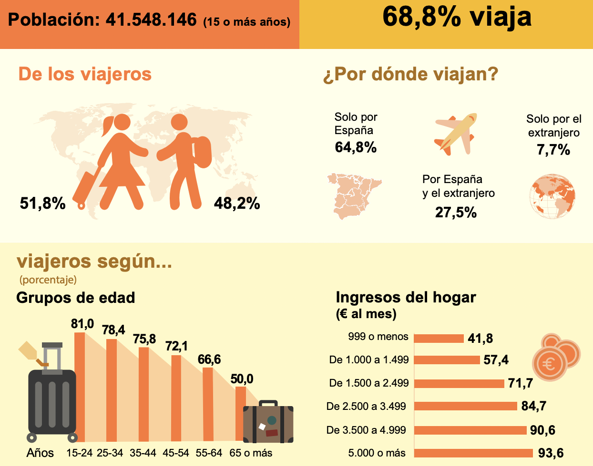
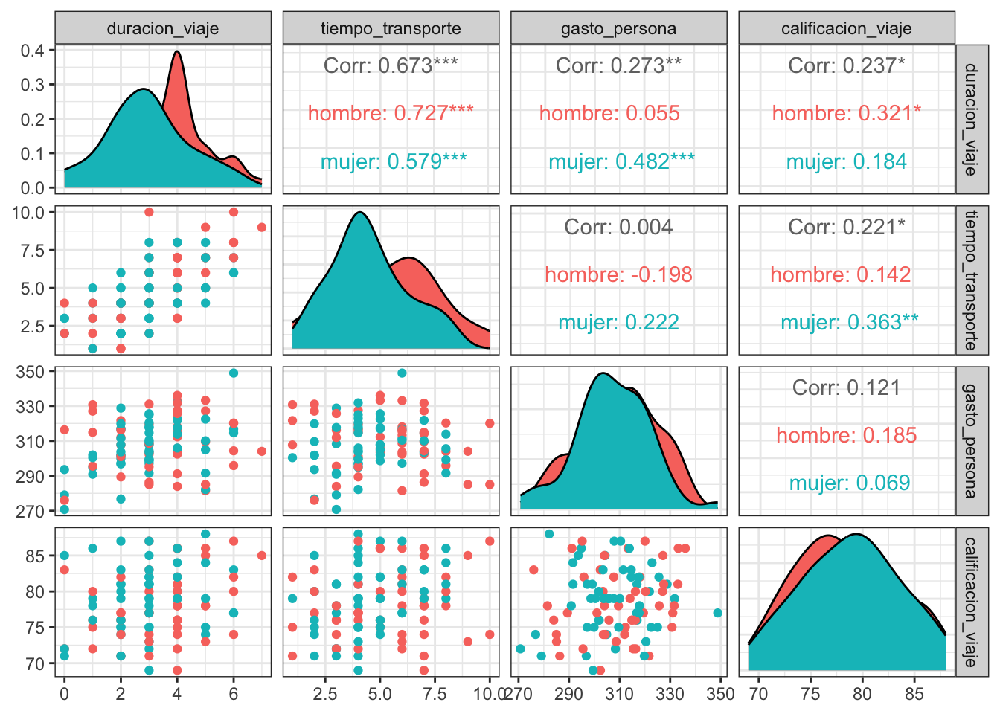
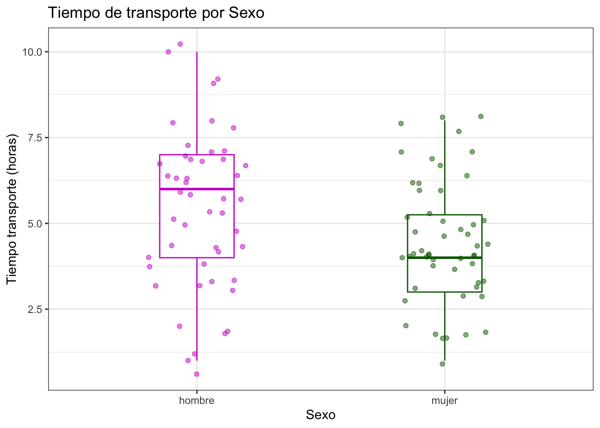
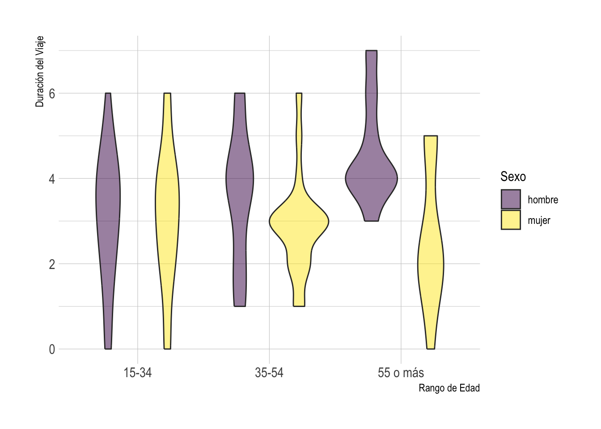
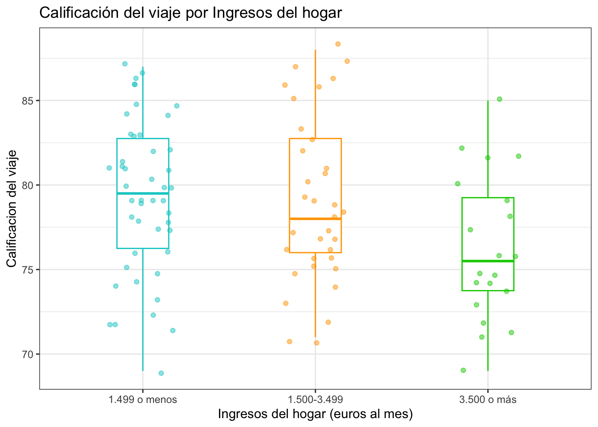

Rows: 100
Columns: 9
$ duracion_viaje <dbl> 3, 4, 6, 2, 5, 2, 4, 4, 2, 3, 4, 4, 6, 3, 1, 4, 2, …
$ tiempo_transporte <dbl> 5, 5, 7, 4, 6, 3, 5, 6, 4, 5, 7, 6, 6, 3, 4, 6, 1, …
$ gasto_persona <dbl> 325.54, 312.29, 314.59, 289.37, 281.46, 328.78, 305…
$ calificacion_viaje <dbl> 82, 75, 83, 77, 78, 81, 76, 82, 81, 80, 80, 81, 77,…
$ destino <fct> solo ESP, solo ESP, ESP y extranjero, solo ESP, sol…
$ sexo <fct> mujer, hombre, mujer, hombre, hombre, mujer, hombre…
$ rango_edad <ord> 35-54, 15-34, 15-34, 35-54, 55 o más, 55 o más, 55 …
$ ingresos_hogar <ord> 1.499 o menos, 1.499 o menos, 1.499 o menos, 1.500-…
$ nivel_interes <ord> Bajo, Bajo, Bajo, Alto, Neutro, Bajo, Neutro, Neutr…Taller evaluado de repaso para el Primer Parcial
20582- Análisis de Datos para el GMAT
Enlace al repositorio de Github
Aplicamos los pasos del método científico para abordar, con datos simulados, un estudio relacionado con el turismo: los viajes realizados por la población que reside en España en el Segundo Trimestre del 2024. Estudiamos las relaciones entre los diferentes aspectos del viaje y las características de los viajeros.
Simulamos datos de una encuesta de turismo aplicada a los residentes de España sobre sus viajes en dicho periodo. Obtenemos información de la duración del viaje, el gasto por persona, el tiempo de transporte y el destino, entre otros aspectos de interés como el sexo, el rango de edad, los ingresos del hogar o la calificación global del viaje.
Planteamos objetivos de estudio, describimos los datos, los analizamos y obtenemos conclusiones.
Objetivos
La hipótesis general que deseamos investigar es “El gasto por persona y el tiempo de transporte no varían según el destino del viaje: España o el extranjero”.
Definimos objetivos específicos para validar o refutar dicha hipótesis.
Breve análisis exploratorio de datos.
Modelar el destino del viaje por una distribución multinomial.
Realizar un modelo de regresión multivariante del gasto por persona en función de la duración del viaje y el tiempo de transporte.
Analizar si las medias del gasto por persona y el tiempo de transporte difieren significativamente según el destino del viaje.
Descripción de los datos
Consultamos los resultados de la Encuesta de Turismo de Residentes del Segundo trimestre 2024 del repositorio INE.
Algunos resultados de interés:
El número de viajes de los residentes en España en el segundo trimestre es de más de 45 millones, el 68.8% de los residentes viaja.
El gasto total superó los 13.858 millones de euros.
La duración media del viaje es de 3.26 noches.
El gasto medio por persona es de 307.33 euros.
Entre los viajeros, el 51.8% son mujeres y el 48.2% hombres.
El 64.8% viaja solo por España, el 27.5% solo por elextranjero y el 7.7% por España y el extranjero.
Hay más viajeros jóvenes.
Hay más viajeros con mayores ingresos del hogar.

Definimos las variables clave:
Variables cuantitativas:
duracion_viaje: duración del viaje en noches.gasto_persona: gasto por persona en euros.tiempo_transporte: tiempo dedicado al transporte durante el viaje en horas.calificacion_viaje: calificacion del viaje del 0 al 100.
Variables ordinales:
rango_edad: rango de edad en años (“15-34”, “35-54”, “55 o más”).ingresos_hogar: ingresos del hogar en euros al mes (“1.499 o menos”, “1.500-3.499”, “3.500 o más”).nivel_interes: nivel de interés en el viaje (“Bajo”, “Neutro”, “Alto”).
Variables nominales:
destino: ¿Por dónde viajan? “Solo España”, “España y extranjero”, “Solo extranjero”sexo: “Mujer”, “Hombre”.
Generamos una base de datos con 100 observaciones y las variables definidas. Las variables cuantitativas siguen una distribución normal multivariante. Utilizamos la información obtenida del INE para simular las medias y las proporciones.
Visualizamos la tabla de datos.
Análisis descriptivo e interpretación de la variancia
Realicemos un análisis descriptivo multivariantes de la base de datos de acuerdo a los objetivos del trabajo.
Diferencias por Sexo
Veámoslo de froma más clara. Con ggpais, pintemos las variables cuantitativas por sexo.

En el triangulo inferior de la representación vemos los gráficos de dispersión y en el triangulo superior se indican las correlaciones. Vemos que la correlación positiva entre la duración del viaje y el tiempo de transporte se muestra en su gráfico de dispersión: a mayor duración del viaje mayor tiempo de transporte.
En la diagonal se muestran las distribuciones de cada variable distinguidas por sexo. Vemos una cierta diferencia entre hombres y mujeres en la duración del viaje y tiempo de transporte.
Tiempo de transporte por Sexo
Cruzamos la variable cuantitativa tiempo_transporte con la variable categórica sexo. Usamos gráficos de boxplot para visualizar la información.

Vemos que la mediana del tiempo que los hombres dedican al transporte en los viajes es mayor que la de las mujeres.
Duración del viaje por Sexo y Rango de edad
Ahora, graficamos un gráfico de violín para estudiar la duración del viaje por Sexo y Rango de edad.

La duración del viaje varía con el sexo y el rango de edad: A partir de los 35 años, la mediana de la duración del viaje en noches de los hombres es mayor que la de las mujeres y los viajes más largos corresponden a hombres de mayor edad.
Calificación del viaje por ingresos del hogar
Con ggplot, comparamos la calificación del viaje por ingresos del hogar.

Notemos que la calificación del viaje varía según los ingresos del hogar. Los viajeros con mayor ingresos del hogar tienen una calificación mediana del viaje más baja. Por contra, los viajeros con ingresos del hogar de menos de 1.500 euros al mes han calificado de mediana el viaje más positivamente.
Es posible que los viajeros con mayores ingresos del hogar tengan expectativas más altas o viajes más costosos, influyendo en las calificaciones globales más bajas.
Variables cuantitativas: varianza generalizada y total
Para las variables cuantitativas de la base de datos, calculamos e interpretamos la información que proporciona la varianza generalizada y la varianza total.
Definición de varianza generalizada: \[|S| = \prod_i^p \lambda_i\]
Definición de variación total: \[Tr(S)= \sum_i^p \lambda_i\]
donde los \(\lambda_i\) són los valores propios de la matriz de covarianzas \(S\).
Obtenemos los valores propios de \(S\).
La varianza generalizada es 14468.
de manera que hay mucha variabilidad conjunta.
Y la variación total es 226.
Por lo tanto, la suma de las variaciones es de 226.
Notemos que la cantidad de variabilidad que hay en el conjunto de datos es considerable.
Variables no cuantitativas: Modelo de distribución multinomial
Seleccionamos una de las variables no cuantitativas: destino. La varible destino es el factor que indica por dónde viaja la persona. Tiene tres niveles: sólo por España (solo ESP), por España y el extranjero (ESP y extranjero) y sólo por el extranjero (solo extranjero).
La modelizamos con una distribución multinomial, debemos estimar sus parámetros.
De las 100 observaciones:
Solo por España (
solo ESP) tiene 65 observaciones: frecuencia relativa \(p_1 = 0.65\).Solo por elextranjero (
solo extranjero) tiene 27 observaciones: frecuencia relativa \(p_{2} = 0.27\).Por España y el extranjero (
ESP y extranjerotiene 8 observaciones: frecuencia relativa \(p_{3} = 0.08\).
Distribución multinomial de parámetros estimados \(p_1 = 0.65\), \(p_{2} = 0.27\) y \(p_{3} = 0.08\).
Cálculo de la probabilidad de un evento en una muestra de tamaño 20:
Utilizamos el modelo para calcular la probabilidad de que ocurra un evento de interés en una muestra de tamaño 20, relevante para el problema.
Interesa saber si la mayoría viaja por España. De una muestra de tamaño 20, queremos calcular la probabilidad de que haya 15 observaciones de solo ESP, 3 de solo extranjero y 2 de ESP y extranjero.
Como consideramos una distribución multinomial:
\[ P(X_1 = x_1, X_2 = x_2, X_3 = x_3) = \frac{20!}{x_1! x_2! x_3!} \cdot p_1^{x_1} \cdot p_2^{x_2} \cdot p_3^{x_3} \]
Donde \(x_1 = 15\), \(x_2 = 3\), \(x_3 = 2\), \(p_1 = 0.65\), \(p_2 = 0.27\), \(p_3 = 0.08\).
Así, la probabilidad es del 3.05%.
Con la función dmultinom de R obtenemos el mismo valor.
Variables cuantitativas: Modelo de regresión multivariante
Con las variables cuantitativas de tu base de datos, ajusta un modelo de regresión multivariante en la forma:
\[Y=\beta_0+\beta_1 X_1+ \cdots + \beta_p X_p + \epsilon\] Donde \(Y\) es la variable cuantitativa que deseas explicar en función del resto de variables cuantitativas registradas. Además, calcula la función de score e interpreta su resultado en el contexto del problema.
Vamos a modelar gasto_persona como función de las demás variables cuantitativas: tiempo_transporte, duracion_viaje y calificacion_viaje.
Usamos lm para ajustar el modelo de regresión múltiple, que es una forma de regresión multivariante. Es de la forma:
gasto_persona = \(\beta_0 + \beta_1 *\) tiempo_transporte \(+ \beta_2 *\) duracion_viaje \(+ \beta_3*\)calificacion_viaje \(+ \epsilon\)
Call:
lm(formula = gasto_persona ~ tiempo_transporte + duracion_viaje +
calificacion_viaje, data = datos)
Residuals:
Min 1Q Median 3Q Max
-39.240 -7.821 -0.229 9.152 30.450
Coefficients:
Estimate Std. Error t value Pr(>|t|)
(Intercept) 285.1231 23.7144 12.023 < 2e-16 ***
tiempo_transporte -2.4370 0.9263 -2.631 0.00992 **
duracion_viaje 4.6636 1.2490 3.734 0.00032 ***
calificacion_viaje 0.2581 0.3091 0.835 0.40573
---
Signif. codes: 0 '***' 0.001 '**' 0.01 '*' 0.05 '.' 0.1 ' ' 1
Residual standard error: 14.09 on 96 degrees of freedom
Multiple R-squared: 0.1401, Adjusted R-squared: 0.1132
F-statistic: 5.212 on 3 and 96 DF, p-value: 0.002234Notemos que los p-valores nos indican para cada coeficiente si la variable independiente tiene un efecto significativo en gasto_persona. Un p-valor menor a 0.05 sugiere que la variable tiene un efecto significativo. Por ello, tanto el término independiente como los coeficientes de tiempo_transporte y duracion_viaje tienen un efecto significativos. Por contra, la calificacion del viaje no tiene un efecto significativo en el gasto. Por lo tanto, lo obviamos.
Es interesante que la calificación del viaje no tenga un efecto significativo en el gasto. Podría indicar que los gastos del vaijero no dependen necesariamente de su satisfacción con el viaje, sino del tipo de viaje o destino.
Consideremos el modelo de regresión multivariante siguiente:
Call:
lm(formula = gasto_persona ~ tiempo_transporte + duracion_viaje,
data = datos)
Residuals:
Min 1Q Median 3Q Max
-36.981 -7.727 -0.293 9.213 29.610
Coefficients:
Estimate Std. Error t value Pr(>|t|)
(Intercept) 304.6792 3.7369 81.532 < 2e-16 ***
tiempo_transporte -2.3708 0.9215 -2.573 0.011601 *
duracion_viaje 4.7910 1.2377 3.871 0.000197 ***
---
Signif. codes: 0 '***' 0.001 '**' 0.01 '*' 0.05 '.' 0.1 ' ' 1
Residual standard error: 14.07 on 97 degrees of freedom
Multiple R-squared: 0.1338, Adjusted R-squared: 0.116
F-statistic: 7.493 on 2 and 97 DF, p-value: 0.0009422Ahora todos los coeficientes tienen un efecto significativo. Adjusted R-squared es de 0.116.
Consideramos que gasto_persona sigue un modelo de regresión multivariante del tipo:
\[ Y = \beta_0 + \beta_1X_1 + \beta_2X_2 + \epsilon \]
Donde \(Y\) es gasto_persona, \(X_1\) es tiempo_transporte, \(X_2\) es duracion_viaje y \(\epsilon\) es el término de error.
Calculamos la función de score e interpretamos el resultado. Es una forma de estudiar si el modelo está bien ajustado. Seguimos las indicaciones de la resolución del Problema 2 de la Práctica 5 de la asignatura.
Para calcular la función de score, consideramos que queremos estimar los parámetros \(\beta_0\), \(\beta_1\) y \(\beta_2\) del modelo de regresión lineal múltiple: \(Y = \beta_0 + \beta_1*X_1 + \beta_2*X_2 + \epsilon\).
Necesitamos derivar la función de verosimilitud en términos de estos parámetros y luego obtener la función de score tomando la derivada de la log-verosimilitud con respector a \(\beta\).
Podemos escribir el modelo en forma matricial como:
\[ Y = X \beta + \epsilon \] donde
\(X = (1 \, X_1 \, X_2)\) es una columna de unos seguida de las columnas formadas por \(X_1\) y \(X_2\).
\(\beta = (\beta_0, \beta_1, \beta_2)^t\)
\(\epsilon \sim \mathcal{N} (0, \sigma^2I)\) es el vector de términos de error, con una distribución normal con media 0 y varianza \(\sigma^2\).
Como el término del error \(\epsilon\) sigue una normal, el vector \(Y\) también sigue una distribución normal, con media \(X\beta\) t varianza \(\sigma^2I\).
\[ Y \sim \mathcal{N} (X\beta, \sigma^2I) \]
Así, la función de densidad conjunta de \(Y\) es:
\[ f(Y|\beta,\sigma^2) = \frac{1}{(2\pi\sigma^2)^{\frac{n}{2}}}exp \left( -\frac{1}{2\sigma^2}(Y-X\beta)^T(Y-X\beta) \right) \] La log-verosimilitud \(\ell(\beta,\sigma^2|Y)\) es:
\[ \ell(\beta,\sigma^2|Y) = - \frac{n}{2} \log(2\pi\sigma^2) - \frac{1}{2\sigma^2}(Y-X\beta)^T(Y-X\beta) \] La función de score es el gradiente de la log-verosimilitud respecto a los parámetros que nos interesan. Hacemos la derivada parcial con respecto a \(\beta\) obteniendo la función de Score en términos de \(\beta\).
\[ \text{Score}(\beta) = \frac {\partial \ell}{\partial \beta}= \frac{1}{\sigma^2}X^T(Y-X\beta) \] La función de \(Score(\beta)\) nos indica cómo varía la verosimilitud del modelo según los parámetros \(\beta\). Si la función de Score es 0, el modelo alcanza un máximo de verosimiltud respecto \(\beta\) así que tenemos un buen ajuste de los coeficientes \(\beta_0\), \(\beta_1\) y \(\beta_2\). Si no es 0, podríamos seguir cambiando los valores de \(\beta\) para un encontrar un mejor ajute.
Calculamos el valor de la función de score para estos datos. Usamos los valores de nuestro modelo ajustado:
- \(\hat \beta_0 = 304.6792\) (
Intercept) - \(\hat \beta_1=-2.3708\) (
tiempo_transporte) - \(\hat \beta_2=4.7910\) (
duracion_viaje)
Obtenemos el siguiente resultado:
[,1]
(Intercept) 1.464154e-14
tiempo_transporte 7.033681e-14
duracion_viaje 4.392462e-14Los valores de Score que obtenemos son cercanos a cero. Esto sugiere que el modelo está bien ajustado (se encuentra cerca del punto de máxima verosimilitud respecto a los parámetros) y no sería necesario realizar ajustes adicionales.
Contraste de hipótesis de dos medias multivariante
Realizamos un contraste de hipótesis de dos medias multivariante relevante para el problema.
Evaluamos si el vector de medias de las variables cuantitativas de interés gasto_persona y tiempo_transporte es el mismo para dos niveles distintos de la variable no cuantitativa destino que hemos modelado como multinomial: viaje solo por España (solo ESP) y viaje solo por el estrangero (solo extranjero).
Por una parte, ejecutamos el constraste de forma teórica.
Consultamos la sección 3.4.2. Test sobre la media: dos poblaciones de los apuntes de la asignatura.
Supongamos que tenemmos dos matrices de datos independientes \(X_{n_1\times p}\), \(Y_{n_2\times p}\) que provienenn de distribuciones \(N_p(\mu_1, \Sigma), N_p(\mu_2, \Sigma)\).
En nuestro caso, - \(p=2\) - \(X\) el subconjunto de gasto_persona y tiempo_transporte cuyo destino es solo ESP, \(n_1 = 65\) el tamaño de la muestra \(X\). - \(Y\) el subconjuto de gasto_persona y tiempo_transporte cuyo destino es solo extranjero, \(n_2 = 27\) el tamaño de la muestra \(X\).
Construimos un test sobre la hipótesis
\[ H_0: \mu_1 = \mu_2 \] Como \(\Sigma\) es desconocida, el estadístico de contraste es
\[ \frac{n_1+n_2-1-p}{(n_1+n_2-2)p}\frac{n_1n_2}{n_1+n_2}(\overline{\mathbf{x}}-\overline{\mathbf{y}})'\widehat{\mathbf{S}}^{-1}(\overline{\mathbf{x}}-\overline{\mathbf{y}})\sim F^p_{n_1+n_2-1-p}. \] Siendo \(\widehat{\mathbf{S}}=(n_1\mathbf{S}_1+n_2\mathbf{S}_2)/(n_1+n_2-2)\) la estimación centrada (insesgada) de \(\Sigma\).
Calculamos las medias muestrales (\(\over{x}\), \(\over{y}\)), las matrices de covariancia muestrales (\(S_1\), \(S_2\)) y la matriz \(\hat{S}\).
Obtenemos el estadístico de contraste \(F^p_{n_1+n_2-1-p}\) y lo comparamos con el valor crítico (usando un nivel de signifiación \(\alpha = 0.05\)) para decidir si rechazamos \(H_0\).
Si el estadístico de contraste es mayor al valor crítico, rechazamos \(H_0\): las medias son diferentes para los dos destinos.
Si el estadístico de constraste no alcanza el valor crítico, no rechazamos la hipótesis nula.
Como el valor del estadístico de contraste (0.106) no alcanza el valor crítico (3.099), no rechazamos \(H_0\). No tenemos suficiente evidencia para afirmar que las medias de gasto_persona y tiempo_transporte son significativamente diferentes entre los destinos.
Por otra parte, ejecutamos el contraste con la función hostelling.testde R.
Evaluamos si el vector de medias de las variablescuantitativa gasto_persona y tiempo_transporte es el mismo para dos niveles distintos de la variable no cuantitativa destino que hemos modelado como multinomial: viaje solo por España (solo ESP) y viaje solo por el estrangero (solo extranjero).
El p-valor del test de Hotelling es de 0.8995, mayor al nivel de significancia estánrd \(\alpha = 0.05\). No hay evidencia suficiente para rechazar la hipótesis nula de que las medias multivariantes de los dos grupos son iguales. En conclusión, las diferencias entre los dos grupos no son estadísticamente significativas.
No podemos concluir que las medias de gasto_personay tiempo_transporte difieran significativamente entre los viajeros que van sólo por España y los que viajan solo por el extranjero, las diferencias entre los dos grupos no son estadísticamente significativas.
Conclusiones
En conclusión, recogemos los resultados de interés de los análisis y valoramos si apoyan o refutan la hipótesis general.
Del Análisis Descriptivo, destacamos:
A mayor duración del viaje en noches mayor tiempo de transporte en horas, lo cual es razonable.
La duración del viaje varía con el sexo y el rango de edad: A partir de los 35 años, la mediana de la duración del viaje en noches de los hombres es mayor que la de las mujeres, y los viajes más largos corresponden principalmente a hombres de mayor edad.
Los viajeros con mayor ingresos del hogar tienen una calificación mediana del viaje más baja. Es posible que los viajeros con mayores ingresos del hogar tengan expectativas más altas o viajes más costosos, influyendo en las calificaciones globales más bajas.
Hemos modelado el destino de viaje por una multinomial. Esto puede ser útil para predecir el comportamiento de los viajeros.
Hemos obtenido un modelo de regresión multivariante de la forma:
gasto_persona = \(\beta_0\) + \(\beta_1\) tiempo_transporte + \(\beta_2\) duracion_viaje
Considermaos que este modelo está bien ajustado (los valores de Score que obtenemos son cercanos a cero).
Hemos visto que no podemos concluir que las medias del gasto por persona y el tiempo de transporte difieran significativamente entre los viajeros que viajan sólo por España y los que viajan solo por el extranjero.
Esto apoya la hipótesis general de que el gasto por persona y el tiempo de transporte no varían según el destino del viaje: España o el extranjero.
Recomendaciones
Consideramos sugerencias para futuros estudios o para poíticas de turismo.
Para futuros estudios, proponemos recoger información sobre el tipo de alojamiento y estudiar su relación con la calificación global y el gasto. También puede ser interesante comparar los datos entre diferentes trimestres y obersvar la estacionalidad.
Para políticas de turismo, proponemos adaptar la oferta a las expecativas de viajeros de altos ingresos, dado que estos viajeros tienden a dar calificaciones más bajas. Por ejemplo, ampliar la variedad de servicios premium.
Bibliografía
Ejercicios resuletos de la Asignatura.
Documento “Recomendaciones para escribir informes de proyectos en Estadística” del curso.
Encuesta de Turismo de Residentes del Segundo trimestre 2024 del repositorio del INE